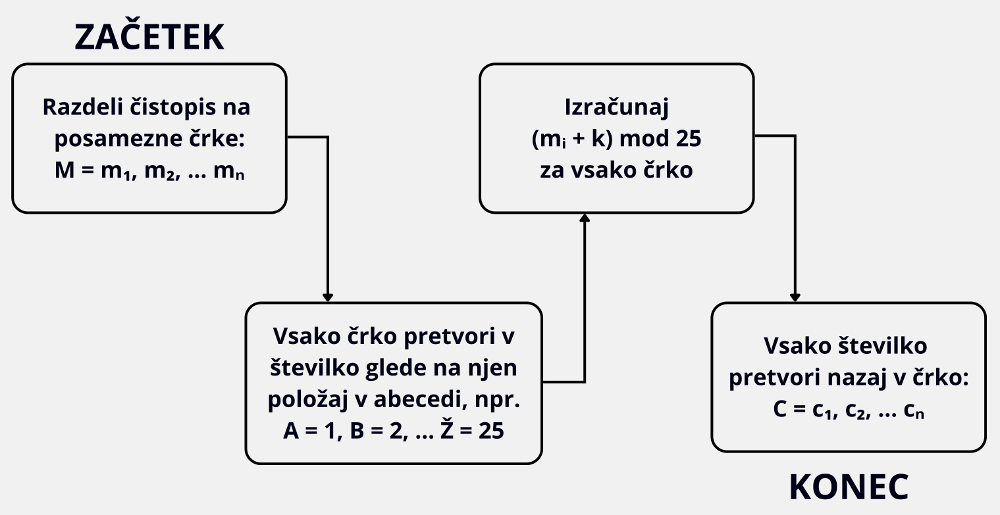
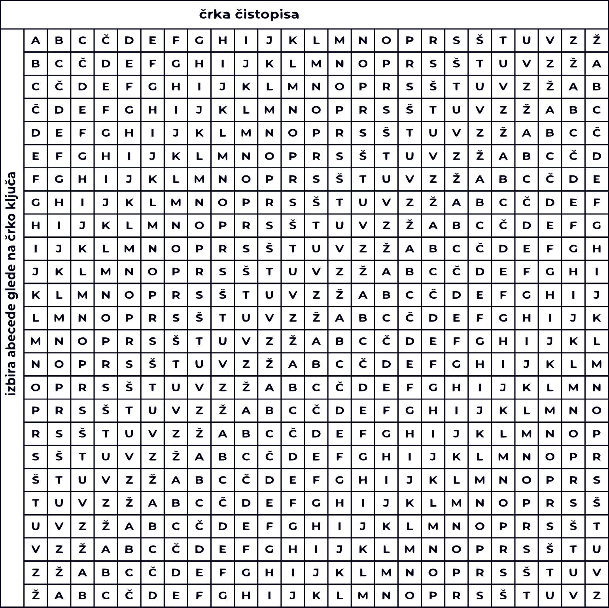
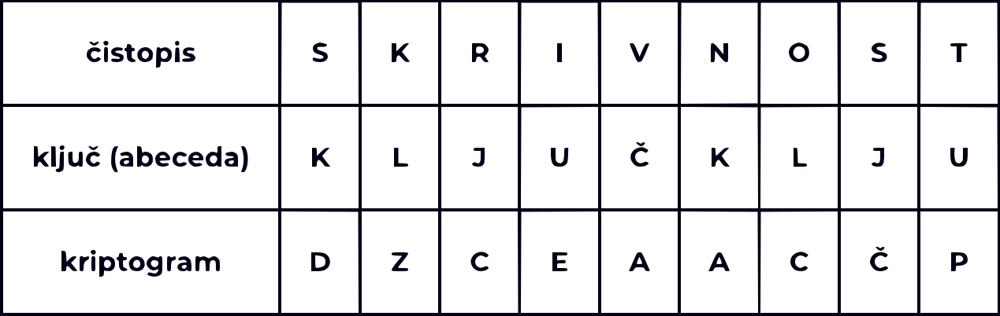

Substitucijske metode so osnovne kriptografske tehnike, ki delujejo tako,
da vsak znak (ali skupino znakov) v sporočilu zamenja z drugim znakom (ali skupino znakov).
Cilj je prikriti izvirno sporočilo in ga zaščititi pred nepooblaščenimi osebami. Med znane substitucijske metode
spadata Cezarjev in Vigenerjev kriptogram.Gre za zelo preproste metode, ki jih je zaradi ponavljanja znakov mogoče razmeroma hitro razbiti s
frekvenčno analizo. Zaradi tega danes niso več primerne za varno šifriranje.
(Sidhu, 2023)
Vrste substitucijskih metod:
(Sidhu, 2023)
Cezarjev kriptogram je ena najstarejših substitucijskih metod, poimenovana po rimskem cesarju Julijo Cezarju, ki jo je uporabljal za varovanje vojaških sporočil. Spada med monoalfabetske substitucijske metode, saj uporablja le eno abecedo za kriptiranje.
Kako deluje?
Vsako črko v sporočilu premaknemo za določeno število mest v abecedi. Število mest predstavlja ključ (npr. če je ključ 3, se A
spremeni v Č, B v D, itd.). Pošiljatelj in prejemnik morata poznati isti ključ, zato govorimo o simetrični
kriptografiji.
Omejitve:
Osnovni algoritem:

(Sarkar, 2020)

Vigénerjev kriptogram je naprednejša oblika substitucijske metode, ki uporablja več Cezarjevih šifer hkrati.
Temelji na polialfabetni substituciji, kar pomeni, da za šifriranje uporablja več
različnih abeced določenih s črkami ključa.
To metodo je težje razbiti s frekvenčno analizo, saj ista črka v sporočilu ni vedno šifrirana enako, kar poveča
kompleksnost. Kljub temu pa napredne metode šifriranja omogočajo razbitje šifre.
Kako deluje?
Za ključ uporablja besedo ali besedno zvezo. Vsako črko čistopisa šifrira z abecedo, ki jo določa ustrezna črka v ključu.
Če je sporočilo daljše od ključa, ključ ponavljamo.
Če imamo čistopis: "SKRIVNOST" in ključ "KLJUČ", bo postopek naslenji:

(McDonald, n. d.)
Substitucijske metode, kot sta Cezarjev in Vigenerjev kriptogram, predstavljajo pomemben korak v razvoju kriptografije. Čeprav so bile nekoč učinkovite za zaščito informacij, so danes zaradi preproste strukture in ranljivosti na frekvenčno analizo, neprimerne za sodobno rabo. Predstavljajo pa dragoceno učno orodje za razumevanje razvoja in logike kriptografskih tehnik, ki so podlaga za sodobne algoritme. (McDonald, n. d.)